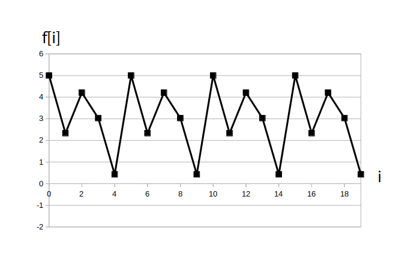
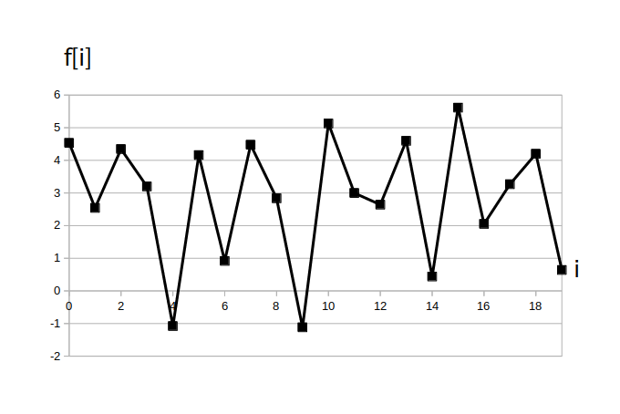

さて $f[i]$ は定常過程と仮定しましたので(標本)自己相関関数 $R[n]$ の値は時刻 $i$ によらずに遅延時刻 $n$ だけで決まります。
そして $R[0]$ は $R[0]$ から $R[\textrm{N}-1]$ の中で常に最大値となります。
また $R[n]$ の値がある程度大きい値である場合は $f[i]$ と $f[i+n]$ の間に強い相関がみとめられます。
以上から次の結論が導かれます。
ちなみに通常 $f[i]$ には雑音が含まれるので各 $R[ i \cdot n]$ と $R[0]$ の値が完全に一致することは稀なのですが、もしこれらの値が一致した場合は信号は周期 $n$ の周期性信号で、かつ雑音が全く含まれていないことを意味します。
例えば前ページで雑音を含んでいない周期 5 のサイン波の例では $R[0] = R[5] = 1/2$ となっていました。
そこでここでは例として周期 5 のディジタル信号
\[ f[i] = 3 + 1 \cdot \sin( 2\pi /5 \cdot i ) + 2 \cdot \cos( 2\pi /(5.0/3.0) \cdot i ) \]
に雑音として平均 0、分散 1 の正規乱数を各時刻で付加すると自己相関関数がどう変化するかみてみましょう。
なお信号長は N=10000 とします。
まず、雑音を加える前の信号は以下の図1です。
確かに周期 5 の信号となっている事が分かります。

そして雑音を加えて実際に得られた信号が図2です。

この信号の自己相関関数のグラフを図3に示します。
この様に $R[5]$、$R[10]$、$R[15]$ の値が $R[0]$ に近く、他の自己相関関数値は相対的に小さかったので、雑音を加える前の信号が周期 5 の周期性信号であることが分かります。